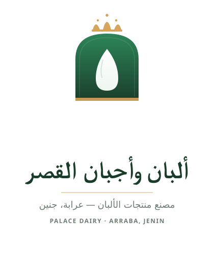

ألبان وأجبان القصر
عرّابة — جنين
دليل استخدام التطبيق
لمجدي أبو جلبوش وموظفي التوزيع
الإصدار 1.0 · يونيو 2026
https://alban-al-gasr.netlify.app
هذا التطبيق صُمّم خصيصاً لمصنع ألبان وأجبان القصر لتسهيل:
- تسجيل الزيارات والمبيعات والمرتجعات والبدل بوضوح تام (لا تخلط بعد اليوم!)
- متابعة ديون كل زبون (مالياً وبالبضاعة)
- حساب الأرباح، المصاريف، والفاقد بشكل تلقائي
- الجرد الشهري والسنوي بضغطة زر
- سؤال المساعد الذكي عن أي شيء بالعربية
أين التطبيق؟
افتح أي متصفح (Chrome, Safari, Firefox) واذهب إلى:
https://alban-al-gasr.netlify.app
يعمل على الموبايل واللاب توب — لا حاجة لتطبيق منفصل.
شاشة الدخول
9:4292%
ألبان وأجبان القصر
عرّابة — جنين
البريد الإلكتروني
••••••••
دخول
شاشة الدخول — أدخل بريدك وكلمة المرور
1
افتح الرابط في المتصفح.
2
أدخل البريد الإلكتروني (مثل: majdi@alqasr.test) وكلمة المرور التي أعطاها لك مهندس النظام.
3
اضغط دخول. سيوجّهك التطبيق إما إلى لوحة التحكم (للمدير) أو إلى قائمة الزبائن (للموظف).
⚠️ نصيحة أمنية: لا تشارك كلمة مرورك مع أحد. كل موظف يحتاج حسابه الخاص.
عند دخولك كمدير، ترى لوحة التحكم. هذه أول شاشة تظهر لك.
10:1488%
ألبان وأجبان القصر
مرحباً مجدي · المدير
🔔 3
💰 صافي الربح هذا الشهر
3,840 ₪
▲ 12% مقارنة بالشهر السابق
📈 المبيعات
9,250 ₪
💸 المصاريف
5,410 ₪
📈 المبيعات اليومية
📊
الرئيسية
👥
الزبائن
📦
المنتجات
⋯
المزيد
لوحة التحكم — أرقامك كلها بضغطة زر
ماذا ترى هنا؟
A
أزرار الفترة الزمنية (يومي/أسبوعي/شهري/سنوي): اضغط أيها لتغيير الإحصائيات.
B
صافي الربح — الرقم الكبير الأخضر. مع نسبة التغيّر عن الفترة السابقة.
C
المبيعات والمصاريف — أرقام مستقلة.
D
الرسم البياني — حركة المبيعات يوم بيوم.
E
أفضل الزبائن والمنتجات — قائمة بأعلى 5 لكل منهما.
من هنا تضيف منتجاتك (لبن، لبنة، جبنة...) مع تحديد الوحدة والسعر، وتعرّف العبوات المختلفة (كرتونة، علبة كبيرة...).
مفهوم العبوات: كل منتج له وحدة أساسية (لتر، كيلو، قطعة). يمكنك بيعه بالوحدة المفردة، أو بعبوات (مثلاً: كرتونة 24 لتر بسعر 110 ₪ بدلاً من 24×5=120). الموظف يختار الشكل الذي يبيعه.
الخطوات
1
من الشريط السفلي اضغط المنتجات.
2
لإضافة منتج جديد: اضغط
+ منتج جديد. املأ:
- الاسم (مثل: لبن)
- الوحدة (لتر / كيلو / قطعة)
- السعر للوحدة (مثل: 5 ₪ للتر)
- التكلفة (اختياري — يُستخدم لحساب الربح)
3
إضافة عبوة: تحت قائمة العبوات اضغط + إضافة عبوة. أدخل: الاسم (كرتونة)، كم وحدة تحتوي (24)، السعر للعبوة كاملة (110 ₪).
4
اضغط إضافة المنتج. سيظهر المنتج فوراً للموظفين عند تسجيل الزيارات.
لتعديل أو حذف منتج
1
اضغط على المنتج في القائمة. تظهر شاشة التعديل.
2
عدّل السعر، الاسم، أو العبوات. اضغط حفظ التغييرات.
3
لتعطيل المنتج (دون حذف): أزِل علامة "فعّال". لن يظهر للموظفين لكن يبقى في التاريخ.
⚠️ تنبيه: إذا غيّرت سعر منتج، الزيارات السابقة تحتفظ بالسعر القديم. التغيير يطبّق على الزيارات الجديدة فقط.
إضافة زبون جديد (بنفسك)
1
من الشريط السفلي → الزبائن → + زبون جديد.
2
املأ الاسم، النوع (سوبر ماركت / محل / فرد)، الهاتف، العنوان، وملاحظات. اضغط حفظ.
الموافقة على زبائن أضافهم الموظفون
عندما يضيف موظف زبوناً جديداً وهو على الطريق، يظهر عندك في القسم العلوي بعنوان "بانتظار الموافقة". هذا الزبون يعمل فعلياً (يمكن تسجيل زيارات له) لكن يبقى مميزاً حتى تعتمده.
1
من قائمة الزبائن، انظر إلى القسم الأصفر في الأعلى.
2
لكل زبون فيه ثلاثة أزرار:
- موافقة — يصبح زبوناً عادياً.
- تعديل — لتصحيح الاسم أو إضافة معلومات.
- حذف — يُحذف نهائياً (فقط إذا لم يكن له زيارات بعد).
دمج زبائن مكررين
مشكلة شائعة: أحياناً يضيف الموظف زبوناً موجوداً مسبقاً (بالخطأ أو لأنه لم يجده). الدمج يحل هذا.
1
من قائمة الزبائن → اضغط دمج (الزر العلوي).
2
اختر الزبون الرئيسي (الذي ستبقي عليه).
3
حدّد الزبائن المكررين (الذين ستندمج بياناتهم في الرئيسي).
4
سترى معاينة: مجموع الديون، عدد الزيارات، البدل المستحق بعد الدمج.
5
اضغط دمج. كل الزيارات والمدفوعات تنتقل للرئيسي. المكررون يختفون من القائمة (لكن التاريخ محفوظ — لن يُفقد شيء).
المصاريف تشمل: وقود، رواتب، إيجار، حليب خام، أخرى. كل مصروف يحسب تلقائياً ضمن صافي الربح.
إضافة مصروف يدوياً
1
من المزيد → المصاريف → + مصروف جديد.
2
اختر التصنيف، أدخل المبلغ بالشيكل، اختر التاريخ، أضف ملاحظة (اختياري).
3
اضغط إرفاق صورة الفاتورة لرفع صورة من الكاميرا أو الجاليري (اختياري لكن مفيد للتدقيق).
💡 الطريقة الأسرع: استخدم المساعد الذكي (الفصل 9). فقط صوّر الفاتورة في شاشة "اسأل بياناتك" — يقرأ المبلغ والتصنيف تلقائياً ويسجّل المصروف.
سجّل كل يوم ما أنتجته من كل منتج، وما تلف منه. التطبيق يستخدم هذا لحساب رصيد المخزون (الجرد).
الخطوات
1
من المزيد → الإنتاج والفاقد → + تسجيل جديد.
3
أدخل الكمية المنتجة (مثلاً: 50 لتر).
4
أدخل الفاقد إن وُجد (مثلاً: 2 لتر فسدت أو انسكبت).
التطبيق يمنعك من إدخال فاقد أكبر من الإنتاج — رسالة خطأ بسيطة.
التقارير
للبحث في الزيارات السابقة بمعايير محددة.
3
اختر فلاتر اختيارية: زبون معين، منتج معين، موظف معين.
4
اضغط تطبيق الفلاتر. ترى قائمة الزيارات والمجاميع.
الجرد (الإقفال الدوري)
لمعرفة رصيد كل منتج (افتتاح → إنتاج → بيع → فاقد → إقفال).
2
اختر الفترة (أسبوعي / شهري / سنوي).
3
لكل منتج ترى:
| رصيد الافتتاح | ما كان موجوداً قبل بداية الفترة |
| + إنتاج | ما أنتجته خلال الفترة |
| − مبيعات | ما بِعته |
| − بدل | ما أعطيته مجاناً كتعويض |
| − فاقد | ما تلف |
| = رصيد الإقفال | ما يجب أن يكون في المخزن الآن |
يمكنك تنزيل أي تقرير كملف CSV (للإكسل وحسابات دحبور) أو PDF (للطباعة والمشاركة).
الخطوات
2
اختر نوع التقرير: المبيعات / المصاريف / الإنتاج والفاقد.
4
اضغط تحميل CSV أو تحميل PDF.
5
الملف ينزل إلى جهازك. للهاتف: يظهر في "التنزيلات". للكومبيوتر: في مجلد Downloads.
للمحاسب (أحمد دحبور): أرسل له ملف CSV عبر الواتساب أو الإيميل. سيفتحه مباشرة في Excel — العربية ستظهر صحيحة.
تسأل بالعربية، يجيب بالعربية. يستخدم بياناتك الفعلية. مدعوم بـ Gemini من Google — مجاناً.
10:2287%
✨اسأل بياناتك
مدعوم بـ Gemini
↻
بعت 247 لتر لبن خلال آخر شهر بإجمالي 1,235 ₪. ارتفاع 18% عن الشهر السابق 📈
✓ تم. أضفت 185 ₪ وقود ضمن مصاريف اليوم.
كم ربحت اليوم؟
أكثر مرتجع
📷
اكتب سؤالك...
➤
المساعد الذكي — اسأل بأي لغة، يجيب بالعربية
كيف تستخدمه
1
من المزيد → اسأل بياناتك.
2
اكتب سؤالك في الأسفل (مثل: "كم بعت اليوم؟"، "أي زبون أكثر دين؟").
3
أو اضغط أحد الاقتراحات الجاهزة فوق صندوق الكتابة.
4
اضغط ➤ أو Enter — يصلك الجواب خلال 2-3 ثوان.
الحيلة الذكية: تصوير الفاتورة
2
صوّر الفاتورة (وقود، أو أي مصروف) — أو اختر صورة محفوظة.
3
المساعد يقرأ المبلغ والتصنيف ويسجّل المصروف تلقائياً. توفّر عليك الكتابة اليدوية!
أمثلة أسئلة:
- كم بعت لبنة الأسبوع الماضي؟
- أي زبون عنده أعلى ديون؟
- ما أكثر منتج رجّعه الزبائن؟
- قارن أرباح هذا الشهر بالشهر السابق
- كم خسرت من فاقد هذا الأسبوع؟
في أعلى كل شاشة من شاشاتك (كمدير) ترى جرساً صغيراً. الرقم البرتقالي بجانبه = عدد الإشعارات التي لم تقرأها بعد.
ما الذي يولّد إشعاراً؟
- كلما سجّل موظف زيارة جديدة
- كلما أضاف موظف زبوناً جديداً (يحتاج موافقتك)
- كلما أُضيف مصروف
- كلما سُجِّل إنتاج جديد
- كلما دُمج زبائن
⚡ تحديث فوري: الرقم على الجرس يتحدّث تلقائياً خلال ثانيتين من لحظة قيام الموظف بأي شيء. لست بحاجة لإعادة تحميل الصفحة.
عرض الإشعارات
1
اضغط على الجرس 🔔 — تنتقل إلى صفحة الإشعارات.
2
في الأعلى ترى الزبائن بانتظار الموافقة (إن وُجدوا).
3
تحتها سجل النشاط الكامل، مرتب من الأحدث.
4
يمكنك تصفية بالفاعل (موظف معين) أو نوع الإجراء.
5
لإفراغ العداد: اضغط وضع الكل كمقروء.
إذا دخلت كموظف توزيع، أول ما تراه هو قائمة الزبائن مع تنبيهات الحساب لكل واحد.
9:4292%
ألبان وأجبان القصر
مرحباً أحمد · موظف توزيع
🔍 ابحث عن زبون...
سوبر ماركت الأخوة
💰 85 ₪
🥛 3 لتر لبن
محلات أبو خالد
💰 240 ₪
بقالة النور
🥛 2 ك جبنة
سامي العتيلي
✓ مسوّى
شاشة الزبائن للموظف — كل زبون مع تنبيهات حسابه
قراءة التنبيهات
| التنبيه | المعنى |
|---|
| 💰 مبلغ | هذا الزبون يدين لك بالمبلغ المذكور — اطلب الدفع. |
| 🥛 كمية | أنت تدين لهذا الزبون بكمية بدل (تعويض عن مرتجع سابق). |
| ✓ مسوّى | الحساب نظيف — لا ديون ولا بدل مستحق. |
إذا قابلت محلاً جديداً يريد أن يبدأ الطلب منك، لا تحتاج للاتصال بمجدي. أضفه بنفسك من التطبيق.
1
من قائمة الزبائن، في الأعلى يميناً، اضغط + زبون جديد.
2
املأ:
- الاسم (مثل: محلات الفجر) — مطلوب
- الهاتف (اختياري)
- النوع (سوبر ماركت / محل / فرد)
3
اضغط إضافة الزبون. ينتقل بك التطبيق إلى صفحته مباشرة.
4
سيظهر بشارة "بانتظار الموافقة" صفراء بجانب الاسم. هذا طبيعي — مجدي سيراجعه ويوافق لاحقاً.
5
يمكنك تسجيل زيارة له فوراً دون انتظار الموافقة.
💡 نصيحة: اكتب الاسم كاملاً وواضحاً (مثل "محلات أبو فادي - بلاطة" بدلاً من "أبو فادي" فقط) ليسهل على مجدي تمييزه عن المحلات المشابهة.
هذا الفصل الأهم — يحل مشكلة "تختلط عليّ الأمور بين البيع والمرتجع والبدل".
9:4892%
عناصر الزيارة
🔄 لبن — 3 لتر
بدل
بدون مقابل
المطلوب الآن71 ₪
✓ تأكيد الزيارة
شاشة الزيارة الجديدة — ثلاثة أزرار تحل كل التداخل
الأزرار الثلاثة — متى تستخدم أي زر؟
| الزر | اللون | متى |
|---|
| + بيع جديد |
أخضر |
بضاعة جديدة تبيعها وتأخذ مقابلها (السعر يضاف للمطلوب). |
| ↩ مرتجع |
برتقالي |
بضاعة تالفة/منتهية يعيدها الزبون. لا تأخذ مالاً، لكن تصبح ديناً عليك للزبون. |
| 🔄 بدل |
أخضر داكن |
بضاعة تعطيها بدون مقابل لتعويض مرتجع سابق. يقلل دينك للزبون. |
سيناريو حقيقي: مثال خطوة بخطوة
الموقف: سوبر ماركت الأخوة عنده 3 لتر لبن تالف. أنت توصّله اليوم طلب جديد: 7 لتر لبن + 2 كيلو لبنة. وتعطيه 3 لتر بدل تالف.
1
افتح بطاقة الزبون → اضغط + زيارة جديدة.
2
اضغط 🔄 بدل → اختر لبن → "لتر مفرد" → الكمية 3 → "إضافة". تظهر سطر "بدون مقابل".
3
اضغط + بيع جديد → اختر لبن → "لتر مفرد" → الكمية 7 → "إضافة". تظهر بسعر 35 ₪.
4
اضغط + بيع جديد مرة أخرى → اختر لبنة → "كيلو مفرد" → الكمية 2 → "إضافة". تظهر بسعر 36 ₪.
5
في الأسفل ترى المطلوب تحصيله الآن = 71 ₪ (35 + 36، البدل بدون مقابل).
6
اضغط ✓ تأكيد الزيارة. ينقلك إلى الإيصال.
طباعة الإيصال أو حفظه
1
من شاشة الإيصال، اضغط 🖨️ طباعة في الأعلى.
2
يفتح المتصفح صندوق الطباعة. اختر طابعتك أو "Save as PDF".
مهم: في صندوق الطباعة، اضغط "More settings" ثم ألغِ علامة "Headers and footers". وإلا سيظهر التاريخ والرابط فوق وتحت الإيصال. الإعداد يُحفظ للمرات القادمة.
بعد تأكيد الزيارة
تلقائياً:
- دين الزبون عليك للبدل يقل من 3 إلى 0 لتر لبن.
- دين الزبون لك يزيد من 85 ₪ إلى 156 ₪ (85 السابق + 71 الجديد).
- يصل إشعار فوري لمجدي على جرسه.
- تظهر الزيارة في قائمة "زياراتي".
للمدير والموظف معاً
❓ هل التطبيق يعمل بدون إنترنت؟
لا — يحتاج إنترنت لتزامن البيانات. لكنه خفيف جداً، يعمل حتى مع شبكة بطيئة.
❓ هل يعمل على iPhone و Android؟
نعم، على أي متصفح (Chrome / Safari / Firefox). لا حاجة لتثبيت تطبيق.
❓ نسيت كلمة المرور — ماذا أفعل؟
اتصل بمجدي. من حسابه يدخل إلى "الموظفين" ويُعيد ضبط كلمة المرور.
❓ هل البيانات آمنة؟
نعم. كل بياناتك مخزّنة على Supabase (شركة عالمية مرخّصة)، مع نسخ احتياطية يومية لمدة 7 أيام، وكل اتصال مشفّر.
❓ هل التطبيق مجاني؟
نعم — بنيناه بالكامل على خدمات مجانية. لن تدفع شيئاً ما دامت الكميات في حدود معقولة (وهي كبيرة جداً لمصنع بحجمكم).
❓ موظف غادر الشركة — ماذا أفعل؟
مجدي → "المزيد" → "الموظفين" → اضغط على الموظف → "موقوف". لن يستطيع الدخول لكن تاريخ زياراته يبقى محفوظاً.
❓ كيف أرسل تقرير CSV للمحاسب أحمد دحبور؟
من "تصدير" → اختر "المبيعات" → الفترة → "تحميل CSV". الملف ينزل عندك. أرسله عبر الواتساب أو الإيميل. سيفتحه أحمد مباشرة في Excel أو في برنامج دحبور للحسابات.
❓ ماذا أفعل إذا التطبيق توقف عن العمل؟
1. أعد تحميل الصفحة (سحب للأسفل في الموبايل).
2. تأكد من الإنترنت.
3. إذا استمرّت المشكلة، اتصل بمحمود مرداوي (مهندس التطبيق).
نصائح لاستخدام أفضل
💡 للموظف: اضغط على رقم الكمية لمسحه وكتابة رقم جديد بسرعة (بدلاً من حذف رقم رقم).
💡 للمدير: راجع جرس الإشعارات كل يوم. الزبائن "بانتظار الموافقة" يجب أن يُعتمدوا قبل نهاية الأسبوع.
💡 للمدير: صدّر تقارير المصاريف شهرياً وأرسلها للمحاسب. هذا يجعل نهاية السنة المالية أسهل بكثير.
💡 للمدير: استخدم المساعد الذكي يومياً — حتى لمجرد "كم ربحت اليوم؟". هو الأسرع للوصول للأرقام.
تواصل للدعم الفني
محمود مرداوي · ma.mardawi@gmail.com
التطبيق: https://alban-al-gasr.netlify.app
الإصدار 1.0 · يونيو 2026